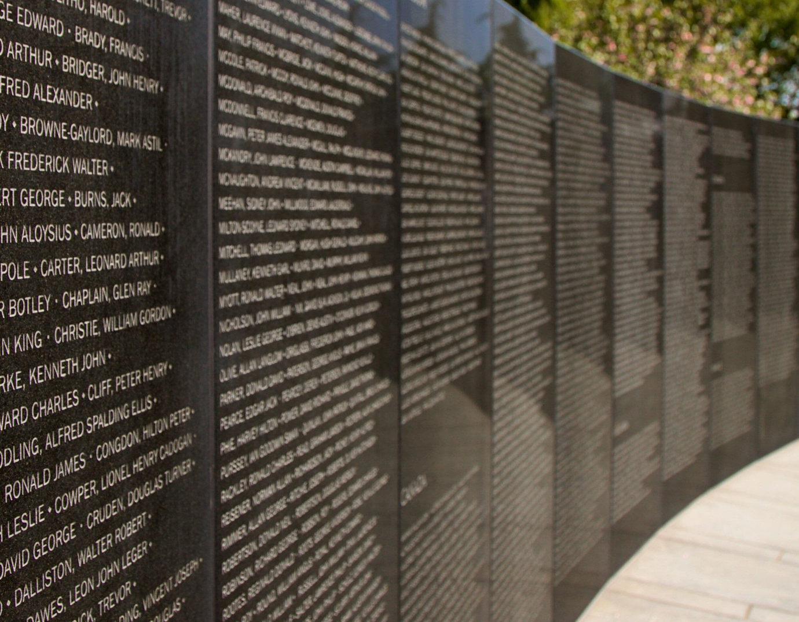
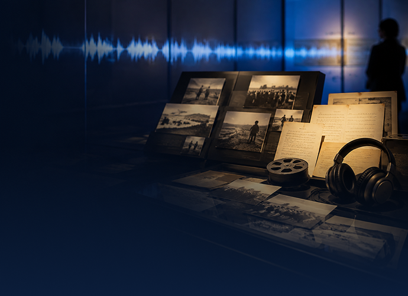
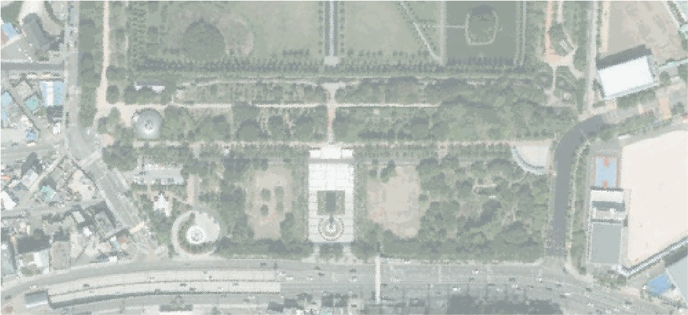
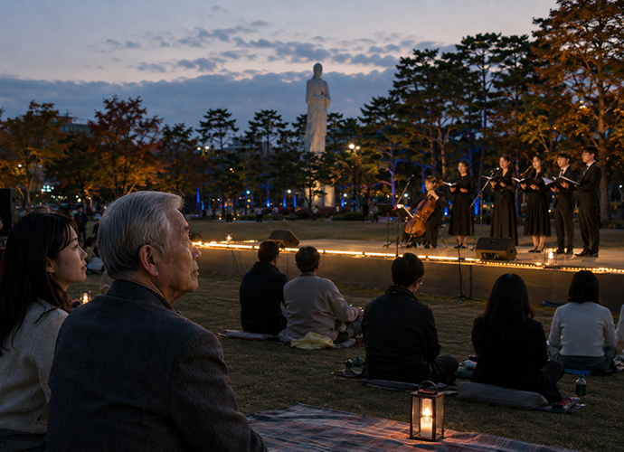
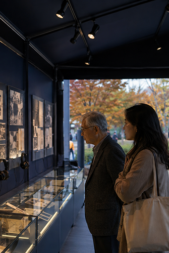
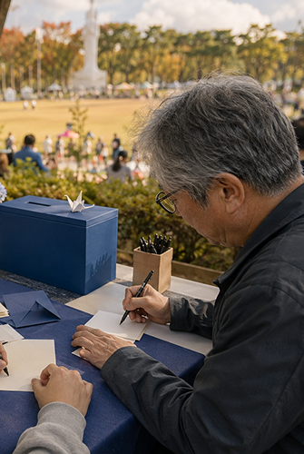
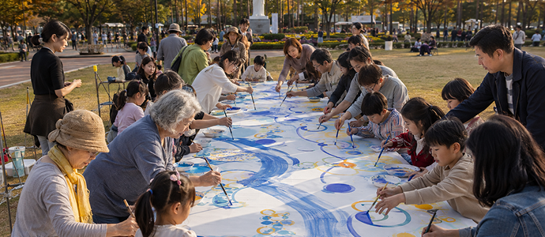
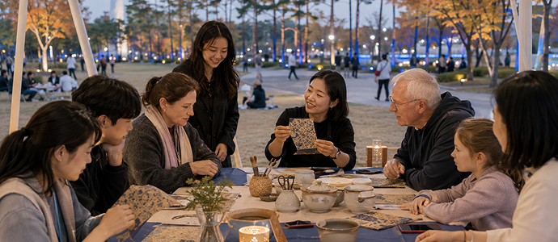

기억
우리가 물려받은 역사와 이름을 기억합니다. 평화는 그들의 희생을 기억하는 일에서부터 시작합니다.
축제소개
기억은 과거에 머무르지 않습니다. 한 사람의 목소리와 기록은 오늘의 경험으로 이어지고, 우리의 참여는 다음 세대의 평화를 만듭니다.
제28회 UN평화축제는 기억과 문화, 예술과 시민 참여가 연결되는 3일간의 평화문화축제입니다. 부산 남구 평화공원 일원에서 평화의 의미를 함께 발견하고 미래를 향한 새로운 약속을 만들어갑니다.
우리가 물려받은 기억을 오늘날의 경험으로 이어지고,
모두 함께 참여하여 평화의 가치를 다음 세대에 전합니다.

우리가 물려받은 역사와 이름을 기억합니다. 평화는 그들의 희생을 기억하는 일에서부터 시작합니다.
프로그램
보고, 쓰고, 만들고,
함께 나누는 참여를 통해
각자의 방식으로 평화를 이어보세요.

사진과 문서, 영상과 목소리를 통해 기억이 세대를 넘어 전해지는 과정을 살펴보는 전시입니다.
오시는 길
부산광역시 남구 대연동 707 (평화공원 일원)
051 · 625 · 0625
한국전쟁기념관 정류장에서 하차
ㆍ10 (안전공영차고지 ↔ 감만현대아파트사거리)
ㆍ155 (서동 ↔ 용당동)
ㆍ583 (용당동 ↔ 범일동)
ㆍ남구8
(용호벽산아파트 ↔ 수영구청,금호어울림)
2호선 경성대·부경대역(경성대) 정류장에서 하차 후
경성대부경대역(구덕민대입구)스 방면 정류장에서 10번, 155번 버스 승차
이후 한국전쟁기념관 정류장에서
하차
평화공원에서 시작하여 기억에서 미래로 나아가는
다양한 행사들을 만나보세요.


개막식과 폐막식, 평화콘서트, 시민 공연이 진행되는 메인 무대입니다.
기억이 오늘까지 이어지는 과정을 살펴보는 기록 전시 공간입니다.
평화와 기억, 도시와 미래를 주제로 토크와 포럼, 워크숍이 진행되는 배움의 공간입니다.
시민이 직접 선과 메시지를 연결해 하나의 평화 그래픽을 완성하는 참여형 작업실입니다.
여러 나라의 문화와 평화 활동을 만날 수 있는 문화체험 및 교류 공간입니다.
가족 프로그램과 휴식, 평화 메시지 전시가 함께 운영되는 열린 정원입니다.
부산 지역 창작자와 소상공인이 참여하는 마켓과 다양한 먹거리를 만날 수 있는 공간입니다.
행사 안내, 프로그램 접수, 의료지원, 미아보호 및 휴게 공간이 운영됩니다.
행사일정
기억을 마주하는 첫날부터 서로를 이어주고 내일을 약속하는 그 순간까지,
세 가지 주제로 펼쳐지는 축제의 모든 프로그램을 만나보세요.
※ 안내된 일정은 재난 및 행사 사정에 따라 변경될 수 있으므로, 방문 전 수시로 확인해 주시기 바랍니다.
기록
공연과 전시, 참여 프로그램을 통해
함께 만든 순간들을 다시 만나보세요.




